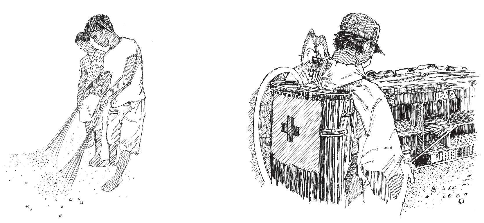
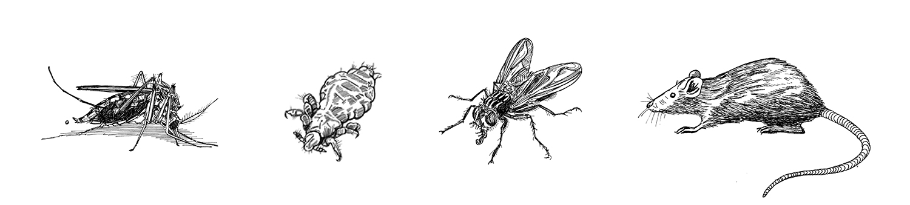

Maintenir la communauté propre. Toujours demander à des professionnels de pulvériser des produits chimiques contre les vecteurs
| Maladie | Vecteur | Moment où le vecteur pique | Lieu de reproduction des vecteurs / réservoirs d’infection | Méthode de prévention communautaire principale | Méthode de prévention communautaire secondaire |
|---|---|---|---|---|---|
| Paludisme | Moustique anophèle | La plupart des espèces piquent la nuit (sauf exceptions notables). | Eau non polluée | Moustiquaires imprégnées d’insecticide de longue durée; pulvérisations intradomiciliaires; traitement préventif intermittent. | Matériaux imprégnés d’insecticide; vaporisation dans l’air; pulvérisation de larvicide. |
| Dengue | Moustique aedes | Matin, après-midi | Cuves, petites mares, eau non polluée | Gestion environnementale; vaccination | Pulvérisation de larvicide |
| Chikungunya | Moustique aedes | Matin, après-midi | Cuves, petites mares | Gestion environnementale | Pulvérisation de larvicide |
| Yellow fever | Moustique aedes | Matin, après-midi | Cuves, petites mares | Vaccination | Gestion environnementale; pulvérisation de larvicide |
| Zika | Moustique aedes | Matin, après-midi | Cuves, petites mares, eau non polluée | Gestion environnementale | Pulvérisation de larvicide |

Vecteurs : moustique, puce, mouche et rat